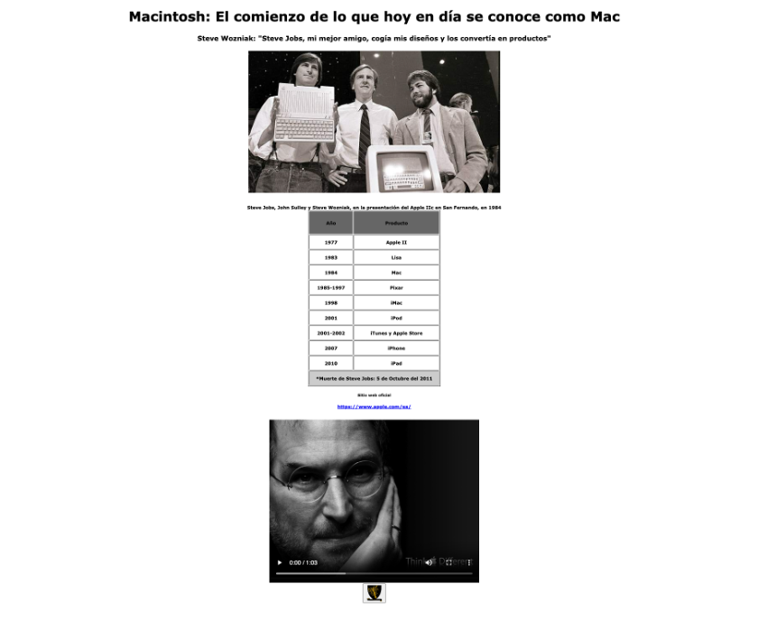
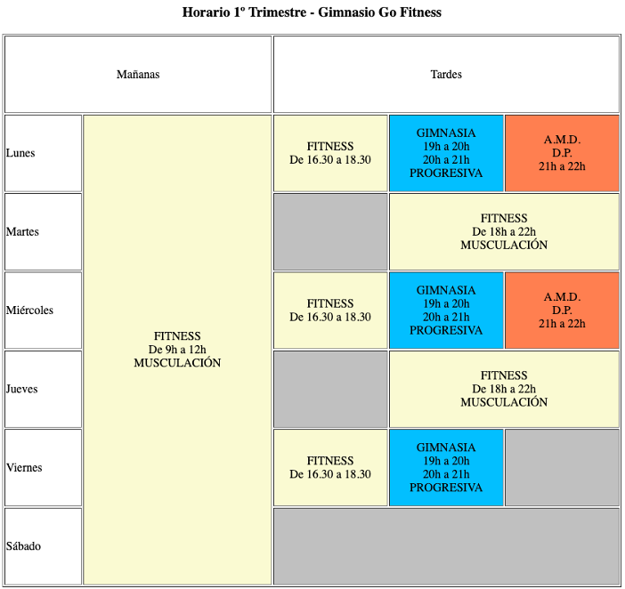

Este fue mi primer proyecto en colaboración con 3 compañeros del FP de DAW en UNIR, donde solo usamos HTML.

Este uno de los proyectos de repaso para el examen, una web de noticias de Apple.

Este uno de los proyectos de repaso para el examen, un calendario con los horarios de un gimnasio.